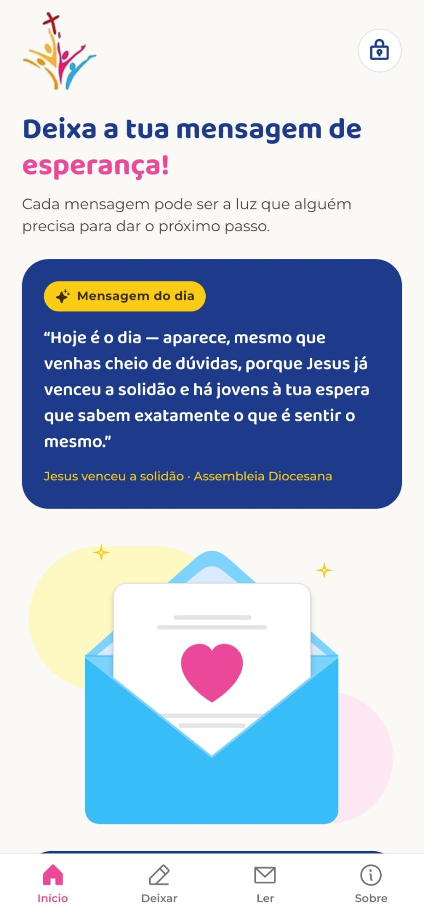
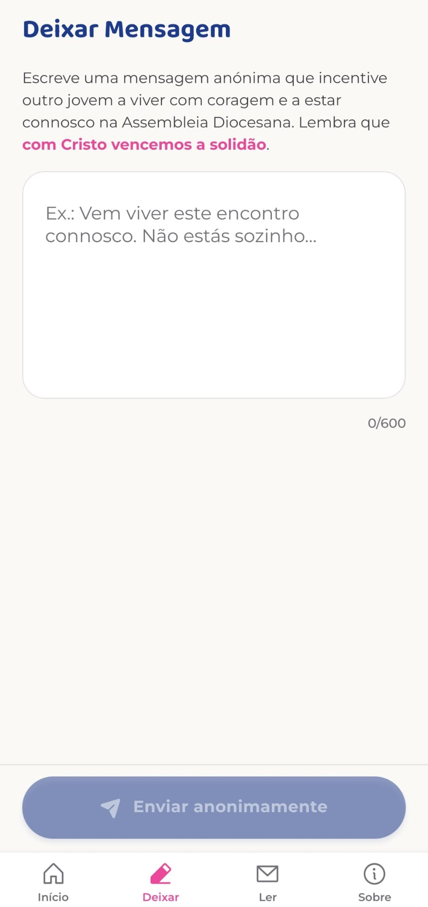
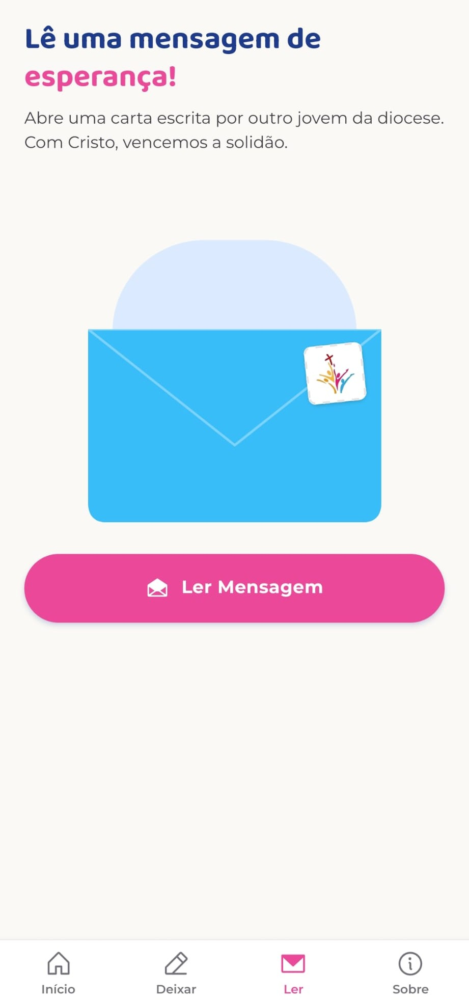
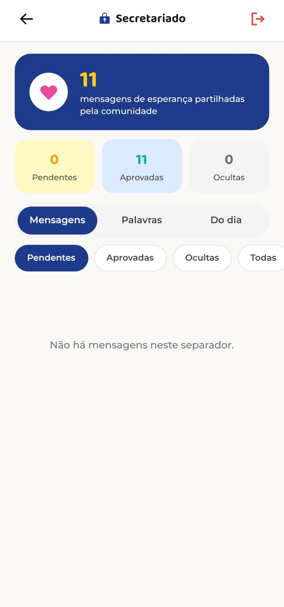

O que é
A Mensagem da Esperança (versão 1.0.4) é uma app Android feita com React Native e Expo, gerada através da plataforma Emergent, um construtor de apps com IA. A app liga-se a um servidor próprio que guarda e distribui as mensagens.
App móvel para jovens de uma Assembleia Diocesana partilharem mensagens de esperança.
A Mensagem da Esperança (versão 1.0.4) é uma app Android feita com React Native e Expo, gerada através da plataforma Emergent, um construtor de apps com IA. A app liga-se a um servidor próprio que guarda e distribui as mensagens.
Foi pensada para os jovens que participam numa Assembleia Diocesana, um encontro de jovens de uma diocese católica. Funciona como um mural de mensagens moderado, com duas partes.
A app tem quatro separadores (Início, Deixar, Ler e Sobre) e uma área reservada ao secretariado, acessível pelo cadeado no ecrã inicial.



